Nach § 3 Abs. 3 der Betriebssicherheitsverordnung hat der Arbeitgeber Art, Umfang und Fristen erforderlicher Prüfungen der Arbeitsmittel zu ermitteln.
Art, Umfang und Fristen der Prüfungen sind bisherige bewährte Praxis und entsprechen den Regeln der Technik.
Die BG-Regel „Betreiben von Arbeitsmitteln“ (BGR 500), Kapitel 2.8 Ziffer 3.15 gibt hierzu weitere Hinweise.
Unabhängig von der regelmäßig erforderlichen Prüfung der Anschlagmittel durch eine befähigte Person muss der Anschläger vor dem jeweiligen Gebrauch das Seil, die Kette oder das Hebeband kontrollieren und sich davon überzeugen, dass sein „Arbeitsmittel“ in Ordnung ist. Durch Einwirkung äußerer Gewalt oder Überlastung seit der letzten regelmäßigen Prüfung können Anschlagmittel inzwischen so beschädigt worden sein, dass ihre Weiterverwendung zum Bruch und zum Absturz von Lasten führen kann (Bild 23-1).
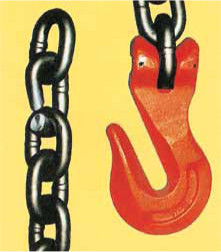
Bild 23-1: Der Kettenparallelhaken beansprucht die Kette weit stärker als Verkürzungsklauen. Durch Überlastung ist ein einzelnes Kettenglied gebrochen und nicht langgezogen. Deshalb genau hinsehen!
Die Kontrolle vor dem Gebrauch dient also dem persönlichen Schutz des Anschlägers.
Ablegereife von Anschlagmitteln
Die Ablegereife von Anschlagmitteln hängt von ihrem Zustand ab. Bei der Prüfung durch die befähigte Person und bei der Sichtkontrolle durch den Anschläger können Mängel erkannt werden.
Stahldrahtseile sind ablegereif bei
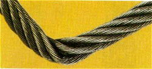
Bild 23-2: Knick
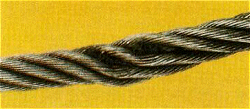
Bild 23-3: Quetschung
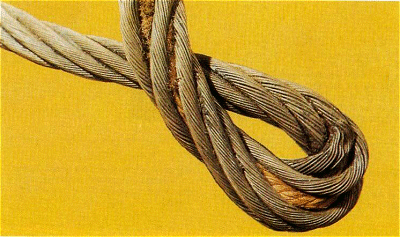
Bild 23-4: Kinke/Klanke und Eindrückung einer Litze. Der Seilverbund ist zerstört: Ablegen!
| Seilart | Anzahl sichtbarer Drahtbrüche bei Ablegereife auf einer Länge von | ||
| 3 d *) | 6 d *) | 30 d *) | |
| Litzenseil | 3 benachbarte Drähte einer Litze | 6 | 14 |
| Kabelschlagseil (siehe BGR 500, Kap. 2.8, 3.15.4.1) | 10 | 15 | 40 |
| *) d = Seildurchmesser | |||
Bild 23-5: Ablegereife von Drahtseilen
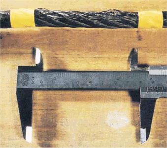
Bild 23-6: Bei einem 14-mm-Litzenseil signalisieren sechs Drahtbrüche auf einer Länge von 6 x Seildurchmesser (d) = 84 mm die Ablegereife
Hanf- und Chemiefaserseile sind ablegereif bei
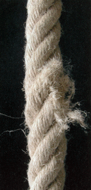 |
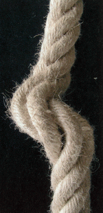 |
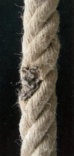 |
Bild 23-7: Zerstörung |
Bild 23-8: Durch Klanke |
Bild 23-9: Wärmeeinfluss |
Ketten sind ablegereif bei
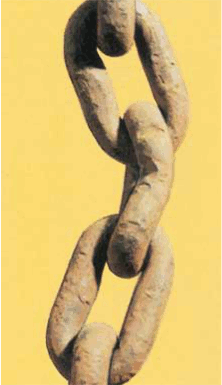
Bild 23-10: Kette mit verbogenem und eingekerbtem Kettenglied
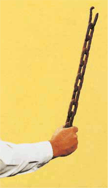
Bild 23-11: Durch Überlastung steif gezogene Kette
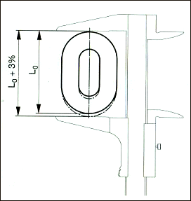
Bild 23-12: Die Kette ist ablegereif, wenn ein oder mehrere Glieder außen um je 3% gelängt sind. Dies entspricht einer inneren Längung von 5%
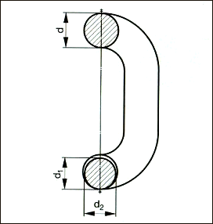
Bild 23-13: Kette ist ablegereif, wenn die mittlere Glieddicke dm an einer Stelle um 10% oder mehr abgenommen hat;
dm = d1 + d2 > 0,9 d 2
Hebebänder sind ablegereif bei
Hebebänder aus Chemiefasern müssen licht- und wärmestabilisiert sein. Diese Forderung der DIN EN 1492 T1 ist Stand der Technik, sodass eine Vorschrift über das Ablegen aufgrund der Alterung nicht mehr in DIN EN 1492-1 „Hebebänder aus Chemiefasern“ aufgenommen ist.
Die ältere Regelung, dass Hebebänder aus Chemiefaser nach sechs Jahren abzulegen sind, ist deshalb nicht mehr anzuwenden.
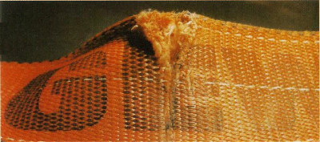
Bild 23-14: Durch scharfkantige Last eingeschnittenes Hebeband
Rundschlingen sind ablegereif bei
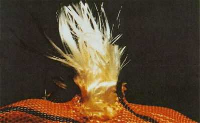
Bild 23-15: Durch Schnitte beschädigte Ummantelung und Einlage einer Rundschlinge
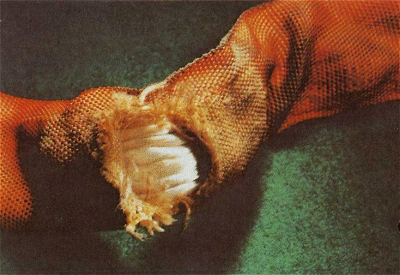
Bild 23-16: Durch Wärmeeinfluss zerstörte Ummantelung; Ablegereife auch wegen Sichtbarkeit der Einlage
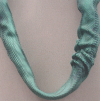
Bild 23-17: Verformung durch Wärme
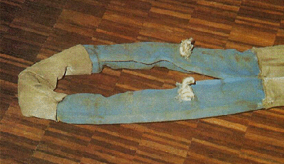
Bild 23-18: Aufgeriebene Schutzhülle. Da auch die Einlage zerstört ist, ist keine Reparatur möglich
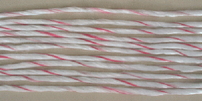
Bild 23-19: Die Einlage einer Rundschlinge besteht meist aus einer einzelnen Kardeele, die mindestens 11-mal umläuft. Wird diese nur einmal durchschnitten, ist der innere Verbund der Rundschlinge durch Reibung nicht mehr gegeben!
Zubehörteile, wie Haken, Ösen und Beschlagteile an Seilen, Ketten und Hebebändern sind ablegereif bei
Bolzen
in Kettenverbindungsgliedern und Gabelkopfverbindungen (siehe Bild 16-1) sind ebenso zu beurteilen. Spätestens nach drei Jahren sollten sie ausgetauscht werden.
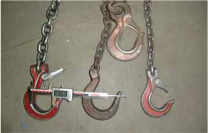
Bild 23-20: Die unteren drei Haken sind mehr als 10% geöffnet und damit ablegereif. 10% sind nicht viel! Aber trotzdem gefährlich!
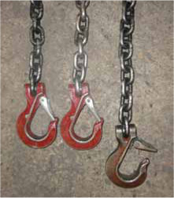
Bild 23-21: Der am gereckten Strang tiefer hängende Haken zeigt, dass der ganze Kettenstrang ausgetauscht werden muss. Die Maulöffnung ist um 10% erweitert, die Klappe schließt nicht mehr